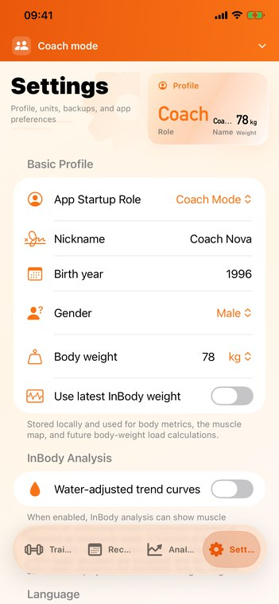

Complete FitRoster tutorial
Usage Tutorial
A complete guide for setting up FitRoster, editing exercise names, building reusable plans, logging sessions, using coach-trainee workflows, reading records and analysis, and protecting your data.
Plan
Create menus, templates, custom exercises, and reusable routines.
Coach
Send plans, receive trainee progress, and review training context.
Review
Use records, goals, body data, and muscle distribution for decisions.


FAQ
Detailed support questions.
Use these answers when something looks different from the screenshots or when sync, records, or custom exercise names need clarification.
Support
Need more help?
Use the support page if you need help with iCloud sync, coach-trainee sharing, backup files, app language, or a specific screen in FitRoster.